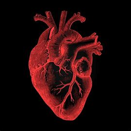
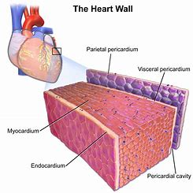
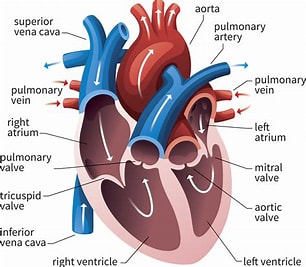
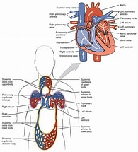

HEART
The heart is a muscular organ that is situated in the front of the chest. It pumps blood all through the body in a process called circulation.Apart from the heart, the blood vessels and blood as a unit constitute the cardiovascular system.r:yellow;

Introduction to the Human Heart
The human heart is one of the most important organs responsible for sustaining life. It is a muscular organ with four chambers. The size of the heart is the size of about a clenched fist.
The human heart functions throughout a person’s lifespan and is one of the most robust and hardest working muscles in the human body.
Besides humans, most other animals also possess a heart that pumps blood throughout their bodies. Even invertebrates such as grasshoppers possess a heart like pumping organ, though they do not function the same way a human heart does.
Position of Heart in Human Body
The human heart is located between the lungs in the thoracic cavity, slightly towards the left of the sternum (breastbone). It is derived from the embryonic mesodermal germ layer
The Function of Heart
The function of the heart in any organism is to maintain a constant flow of blood throughout the body. This replenishes oxygen and circulates nutrients among the cells and tissues.
Following are the main functions of the heart:
One of the primary functions of the human heart is to pump blood throughout the body.
Blood delivers oxygen, hormones, glucose and other components to various parts of the body, including the human heart.
The heart also ensures that adequate blood pressure is maintained in the body
There are two types of circulation within the body, namely pulmonary circulation and systemic circulation.

Types of Circulation
.Pulmonary circulation is a portion of circulation responsible for carrying deoxygenated blood away from the heart, to the lungs and then bringing oxygenated blood back to the heart.
Systemic circulation is another portion of circulation where the oxygenated blood is pumped from the heart to every organ and tissue in the body, and deoxygenated blood comes back again to the heart.
Now, the heart itself is a muscle and therefore, it needs a constant supply of oxygenated blood.
This is where another type of circulation comes into play, the coronary circulation.
Coronary circulation is an essential portion of the circulation, where oxygenated blood is supplied to the heart.
This is important as the heart is responsible for supplying blood throughout the body.
Moreover, organs like the brain need a steady flow of fresh, oxygenated blood to ensure functionality.
In a nutshell, the circulatory system plays a vital role in supplying oxygen, and nutrients and removing carbon dioxide and other wastes from the body. Let us gain a deeper insight into the various anatomical structures of the heart:
Structure of the Human Heart
The human heart is about the size of a human fist and is divided into four chambers, namely two ventricles and two atria. The ventricles are the chambers that pump blood and the atrium are the chambers that receive blood. Among these both the right atrium and ventricle make up the “right heart,” and the left atrium and ventricle make up the “left heart.” The structure of the heart also houses the biggest artery in the body – the aorta.

The right and the left region of the heart are separated by a wall of muscle called the septum. The right ventricle pumps the blood to the lungs for re-oxygenation through the pulmonary arteries. The right semilunar valves close and prevent the blood from flowing back into the heart. Then, the oxygenated blood is received by the left atrium from the lungs via the pulmonary veins. Read on to explore more about the structure of the heart.
External Structure of Heart
One of the very first structures which can be observed when the external structure of the heart is viewed is the pericardium.
Pericardium
The human heart is situated to the left of the chest and is enclosed within a fluid-filled cavity described as the pericardial cavity. The walls and lining of the pericardial cavity are made up of a membrane known as the pericardium.
The pericardium is a fibre membrane found as an external covering around the heart. It protects the heart by producing a serous fluid, which serves to lubricate the heart and prevent friction between the surrounding organs. Apart from the lubrication, the pericardium also helps by holding the heart in its position and by maintaining a hollow space for the heart to expand itself when it is full. The pericardium has two exclusive layers—
Visceral Layer: It directly covers the outside of the heart.
Parietal Layer: It forms a sac around the outer region of the heart that contains the fluid in the pericardial cavity.
Structure of the Heart Wall
The heart wall is made up of 3 layers, namely:
Epicardium :
Epicardium is the outermost layer of the heart. It is composed of a thin-layered membrane that serves to lubricate and protect the outer section.
Myocardium :
This is a layer of muscle tissue and it constitutes the middle layer wall of the heart. It contributes to the thickness and is responsible for the pumping action.
Endocardium :
It is the innermost layer that lines the inner heart chambers and covers the heart valves. Furthermore, it prevents the blood from sticking to the inner walls, thereby preventing potentially fatal blood clots.

Internal Structure of Heart
The internal structure of the heart is rather intricate with several chambers and valves that control the flow of blood.
Chambers of the Heart

Vertebrate hearts can be classified based on the number of chambers present.
For instance, most fish have two chambers, and reptiles and amphibians have three chambers.
Avian and mammalian hearts consists of four chambers.
Humans are mammals; hence, we have four chambers, namely:
Left atrium
Right atrium
Left ventricle
Right ventricle
Atria are thin and have less muscular walls and are smaller than ventricles. These are the blood-receiving chambers that are fed by the large veins.
Blood Vessels

In organisms with closed circulatory systems, the blood flows within vessels of varying sizes. All vertebrates, including humans, possess this type of circulation. The external structure of the heart has many blood vessels that form a network, with other major vessels emerging from within the structure. The blood vessels typically comprise the following:
Veins supply deoxygenated blood to the heart via inferior and superior vena cava, and it eventually drains into the right atrium.
Capillaries are tiny, tube-like vessels which form a network between the arteries to veins.
Arteries are muscular-walled tubes mainly involved in supplying oxygenated blood away from the heart to all other parts of the body. Aorta is the largest of the arteries and it branches off into various smaller arteries throughout the body.